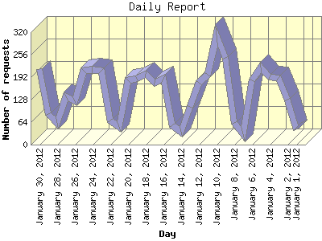

The Daily Report identifies the activity for each day within the reporting period. Remember that one page hit can result in several server requests as the images for each page are loaded.

| Day | Number of requests | Number of page requests | |
|---|---|---|---|
| 1. | January 1, 2012 | 44 | 23 |
| 2. | January 2, 2012 | 127 | 32 |
| 3. | January 3, 2012 | 189 | 44 |
| 4. | January 4, 2012 | 193 | 44 |
| 5. | January 5, 2012 | 220 | 47 |
| 6. | January 6, 2012 | 183 | 39 |
| 7. | January 7, 2012 | 29 | 17 |
| 8. | January 8, 2012 | 61 | 18 |
| 9. | January 9, 2012 | 247 | 44 |
| 10. | January 10, 2012 | 312 | 60 |
| 11. | January 11, 2012 | 199 | 40 |
| 12. | January 12, 2012 | 175 | 43 |
| 13. | January 13, 2012 | 108 | 34 |
| 14. | January 14, 2012 | 36 | 23 |
| 15. | January 15, 2012 | 56 | 12 |
| 16. | January 16, 2012 | 187 | 43 |
| 17. | January 17, 2012 | 176 | 42 |
| 18. | January 18, 2012 | 202 | 33 |
| 19. | January 19, 2012 | 188 | 39 |
| 20. | January 20, 2012 | 184 | 39 |
| 21. | January 21, 2012 | 51 | 22 |
| 22. | January 22, 2012 | 68 | 26 |
| 23. | January 23, 2012 | 211 | 37 |
| 24. | January 24, 2012 | 213 | 43 |
| 25. | January 25, 2012 | 211 | 56 |
| 26. | January 26, 2012 | 124 | 33 |
| 27. | January 27, 2012 | 138 | 41 |
| 28. | January 28, 2012 | 61 | 20 |
| 29. | January 29, 2012 | 88 | 23 |
| 30. | January 30, 2012 | 215 | 44 |
Most active day January 10, 2012 : 60 pages sent. 312 requests handled.
Daily average: 35 pages sent. 149 requests handled.
This report was generated on January 31, 2012 08:06.
Report time frame January 1, 2012 00:29 to January 30, 2012 23:54.
| Web statistics report produced by: analog 6.0 / Report Magic 2.21 |